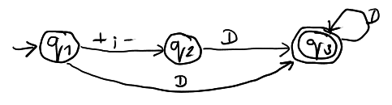
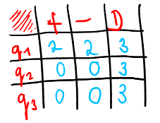
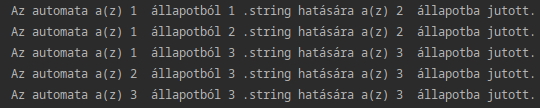
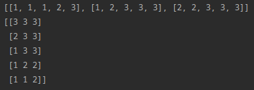
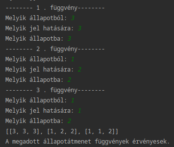

Rövid ismertető és a szükséges előismeretek
Alapszintű jártasság a formális nyelvek és automaták területén.
Az ötletemet először gondolati síkon próbálom meg felvázolni. A lap alján található linkről a cikkhez készült python kód letölthető.
S most először egy konkrét automatát mutatok meg:

Ezt az automatát szokatlanul, egy mátrix alakjában reprezentálom:

Majd ezekből a mátrixokból legyártatom a programommal az összes átmenetfüggvényt:

Ezeket így belerakom egy kétdimenziós tömbbe. Melyet 90 fokkal megforgatok, hogy visszakapjam az eredeti formáját az átmenetfüggvényeknek:

Ezek után a felhasználótól kérünk be tetszőleges átmenetfüggvényeket:

S ennél az állapotfüggvények alapján szűkíteni tudjuk azon szavakat, melyek egyáltalán szóba jöhetnek az automata felismerése terén. Tehát elég sok "rossz" esetet ki tudunk zárni. Majd bemeneti szavakra azonosítjuk az állapotfüggvényeket. (A teljes megoldás az olvasóra bízva.)
$$ for i in workarray: $$
$$ for j in i: $$
$$ if i[1] == 1: $$
$$ print(i) $$
$$ break $$
Például a 2. string ("-") a legelső átmenetfüggvényben szerepel. Ezt az elgondolást továbbfejlesztve készíthetünk egy "előrostás szintaktikai elemzőt"
A fent említett kódot
innét töltheted le.